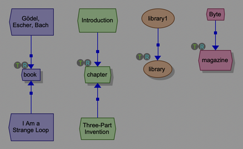
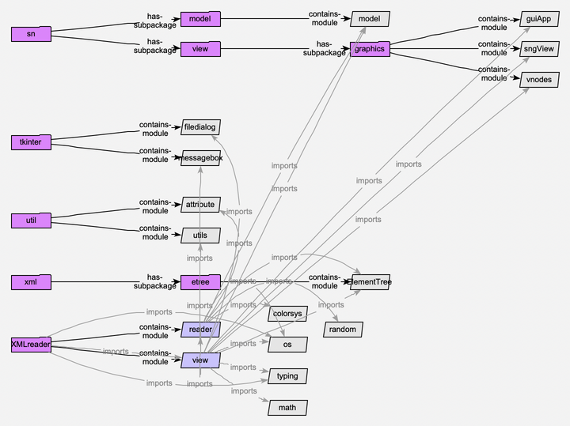

Plugins¶
Semantic Nets can be the front end of other programs: a program makes a model of something – a file, a program, a database – and opens a view of it in the editor, where you can look round it, arrange it, ask about it and reason over it as you would any model. Such a program can be a plugin: it’s loaded when the editor starts, and adds itself to the menu bar – most often to the Tools menu. Two come with Semantic Nets, as examples:
- Tools | XML Reader…
makes a model of an XML file (see The XML reader).
- Tools | Python Parser…
makes a model of a Python program (see The Python parser).
Both save what they make as an ordinary model and view (.snm and
.snv), so you can open them again later from File | Open… or the
model directory, like any other.
Where plugins are¶
Each plugin is a folder in ~/.sn/plugins/ (beside the settings: see
Files and Settings); Help | Reveal Plugins Folder opens it in the Finder.
The ones that come with it are put there when the editor starts, if they aren’t there yet – or if the editor has a newer version of one (which replaces the copy there: so to change one, copy it to a folder of another name first).
Adding one: put its folder there, and start the editor again. (A plugin is a folder with a plugin.toml in it, saying what it is: how one’s made is in the Developer Guide, Building on Semantic Nets.)
Turning one off: list its folder’s name in the
plugins/disabledsetting (Settings…), and start the editor again.One that doesn’t work – it’s for a later version of Semantic Nets, or its code fails – is left out, and the log says why; the rest of the editor, and the other plugins, carry on.
A plugin is a program: its code runs when the editor starts, and models may call its functions (see Menus, tooltips and double-clicks from programs). Install only plugins you trust.
The XML reader¶
Tools | XML Reader… opens a dialog: the XML file to read (choose
one – starting in the folder you read one from last, or, the first time, in
the plugin’s examples), and the three files it makes of it. For
books.xml, they’re books_xml.snm (the model: the elements),
books_xml.snv (the view) and books_xml_ontology.snm (the
ontology: the model’s super-model, with the types and definitions – the
place to change the type hierarchy, or add rules), next to it. Change any of
them, by typing or with Choose…: until you do, they follow the XML
file (and the view and ontology follow the model). (For the plugin’s own
examples, they’re made in ~/Documents/Semantic Nets Examples/ instead:
the plugin’s folder is replaced when a newer version comes.) Go makes
them, asking first if the model or view is there already, and opens the
view.
What the file’s tags and attributes mean is worked out from how they’re used throughout the file, not from their names (they’re only hints), so it works for XML of any kind:
Properties: a tag with no tags inside it, that’s never repeated in an element (a book’s
<title>, say), is a property of the element it’s in, not a thing of its own: the book gets aproperty/titleattribute (see the attribute editor: Editing). Its value is the tag’s text – or, if it has none, its one attribute (<author name="Hofstadter"/>). An element’s own XML attributes are its properties too (property/year). Values that are all whole numbers, all numbers, or all true or false are stored as such.Groups: a tag that’s never repeated, and holds only properties (a device’s
<States>, say), adds them to its element:property/States/onOffState.Things: every other tag – one that holds other things, or is repeated (a book’s
<chapter>s) – becomes a type, with a colour and shape of its own, which its elements inherit, so you can see what each is; and each of its elements an individual of it.Kinds: if a tag’s elements have a property whose name says it’s a kind (it has type, kind, category or class in it), whose values are names that recur (
<book kind="novel">), each is of a subtype named by it, in a shade of its tag’s colour.Names: each is named by its name, title, label, id or key (the first it has), or by its text, if that’s short; otherwise by its tag and a number (chapter1, chapter2, …).
Annotations: an attribute that says what a tag is, rather than what each element is – one on many tags, always the same for each (
type="integer"on every<Address>) – isn’t given to every element: it’s noted on the type, or on the property it describes.Nesting becomes relations: a book’s chapters are related to it by has-chapter. A tag that just holds a list of things (a
<DeviceList>of<Device>s) isn’t made: the element it’s in has them, by has-DeviceList. Each of these is a kind of xml-has-part, so the whole tree is there whatever the tags. The ontology defines xml-part-of as the other way round ([?a -xml-part-of-> ?b] ⇔ [?b -xml-has-part-> ?a]): reason (see Reasoning) concludes that each chapter is xml-part-of its book.References: a property named like a reference (ending in id or ref:
<DeviceID>), most of whose values are another element’s id, is a relation to that element too, named for it (DeviceID): a kind of xml-refers-to.
Each type’s tooltip lists its elements’ properties: hover over one to
see them. (It’s the type’s vis/tooltip: change it there.) The terminal
pane says what the tags were found to be.
An ontology that’s there already is built on, not replaced: the dialog says what it’ll do with the one given. It may be one made before for the same file (which you’ve changed since: moved types about, added types, attributes or rules), or one shared by several XML files of the same kind – choose it for each, and their models are all built on it. (The dialog remembers the ontology you chose: next time, it offers that one, if it’s still there, rather than one beside the model. Empty its field to go back to one beside the model.) It can be a URL (eg: on the web) rather than a file. What’s in it is found by name – a tag’s type by the tag, wherever you’ve moved it in the type hierarchy; a subtype by its kind’s value, under its tag’s type; has-<tag>, the references, xml-has-part, xml-part-of and xml-refers-to by theirs – and only what’s missing is added: a type, property or relation for something new in the file, with a colour and shape of its own.
What it says also overrides what’s worked out from the file: a tag that has
a type there is a thing, even if it would otherwise be a property (make one
for it, to have its elements as things of their own); and one that a type
there has a property for (property/<tag>) is a property.
If the ontology can be changed (a file here that you can write), what’s missing is added to it, and it’s saved – so the next file of that kind finds it there.
If it can’t (it’s on the web, or a file you can’t write), it’s left as it is: the types and has-<tag> relations it hasn’t go in the model instead (a new subtype of one of its types, too), and an attribute its types haven’t is just in the elements.
To start afresh, tick Replace it: a new ontology is made in its place. Anything you’d changed in it is lost, and other models built on it lose their types.
If you’ve renamed or deleted a type, it isn’t found, so it’s made afresh (as for a new ontology), and the log says what was added. (If its has-<tag> is still there, pointing to the renamed type, the log warns you: the reasoner would say each of those elements is out of its range.) If xml-part-of is missing, it’s made again with its definition; if you’ve only deleted its definition, that stays deleted.
The view shows the types (each tag’s, and their subtypes), each with its elements round it, arranged by the balloon layout (see Arranging a View): the types organize it. Expand an element (its menu’s expand, or expand by relation…) to bring in what it holds, what it’s in, and what it refers to. The types are still in the ontology: they’re only shown in the view.
A big file – more than 2000 elements – would take minutes to show, and make a crowded view. For one of those, the view shows just the types, as a tree, each subtype below its type. Expand the ones you’re interested in to bring in their elements, and go on from there.


What the XML reader makes of books.xml (in the plugin’s examples:
~/.sn/plugins/XMLreader/examples/): a library with two books and a
magazine.¶
The examples folder also has library25.xml and library200.xml (25 and 200 made-up books), to see how it copes with something bigger. Things to try:
Hover over a book: its tooltip lists its properties – its id, year, title and author (and in the library files, its kind and language).
Right-click library1, and expand all | 1 level: it’s related to the books by has-book, and to the magazine by has-magazine.
view | hide by category | relation types…, and tick has-chapter: the lines to the chapters are hidden (untick it to show them again). In a file with references, hiding them (eg: DeviceID) leaves just the tree.
The Python parser¶
Tools | Python Parser… makes a model of a Python program: its packages, modules, classes, functions
and methods, the classes’ variables (and their types), their doc strings, and what imports what. It opens a dialog,
listing the files to analyse (a folder stands for all the .py files in
and below it: Add files… and Add folder… add more), with:
- Follow imports: n levels
How far to follow imports from them. 0 analyses just these files (what they import is shown, but not looked into); 1 also the modules they import; and so on.
- Analyse the standard library and installed packages too
Otherwise, imports from those are noted, but not looked into.
- Show imports in the view
Which imports relations to show: none, those of the files given, or all.
and Go.
It makes a model named after the program’s main module, with _py (eg:
XMLreader_py.snm and .snv), next to it, built on an ontology of Python
programs that comes with it (pythonOntology.snm, in the plugin’s folder: package, module, class,
function, method, … and the relations between them). The view shows the
packages and modules, as trees growing right, by includes (see
Arranging a View), and the imports asked for; the rest of the model is there to
be brought in. The view is kept arranged by that tree layout: expand a
module (expand by relation… | defines →, or expand all) and its tree
opens up for its classes and functions.


What the Python parser makes of the XML reader’s own code (imports not followed): its two modules, reader and view, and the modules they import, in their packages.¶
If the model and view are already there (eg: from an earlier run, before the code changed), it asks what to do:
- Update
Bring the model up to date with the code: what’s still there keeps its node – and its id, so the views of the model (yours, and its own) still work – corrected (eg: its doc string, its lines); what’s new is added; and what’s gone from the code is removed from the model. Things are matched by their full dotted names (eg: sn.model.model.Node.isa): something renamed, or moved, is taken to be gone, and something else new. A view that showed something that’s gone shows it as missing (its error report offers to erase view object). Its own view also shows the new packages and modules. Anything of your own in the model – objects, and attributes you’ve added – is left as it is (but a relation to something removed goes with it).
- Replace
Make them afresh.
- Cancel
Leave them as they are.
Its objects know where their code is:
A module’s, class’s or function’s menu has Show source (the code, in a window here, with its lines highlighted), Open in editor and Reveal in Finder.
A class’s or function’s tooltip is its code (cut short if it’s long: see
gui/tooltipMaxLinesin Files and Settings).Double-clicking a class or function opens it in your editor.
The code is found in its file as it is now, by its name – so it’s still
found after the file’s been edited. Open in editor uses the
gui/editorCommand setting (Settings…): a command with {path}
and {line} (and {url}) in it, eg: code -g {path}:{line} for VS
Code, or bbedit +{line} {path} for BBEdit. (Hover over the setting for
more, eg: for Eclipse.) If it’s empty, or can’t be run, the code is shown in
a window here instead.
Things to try:
Expand a module, then a class in it: includes covers defines, defines-method and defines-attr, so the tree goes on out to the class’s methods and variables. A variable shows its type (eg: nodes:list[Node]), and has-type the classes in the model that names: a type that isn’t one of them (eg: int, list) is just shown, not linked to.
Reason: the ontology’s rules conclude what each class has-attr: the variables it defines, and those it inherits (by inherits-from).
view | show | nodes…, and tick class: all the classes, and how they’re related (eg: inherits-from).
view | layout | arrange now | hubs, with all the imports shown: the modules most imported, in the middle of their groups.